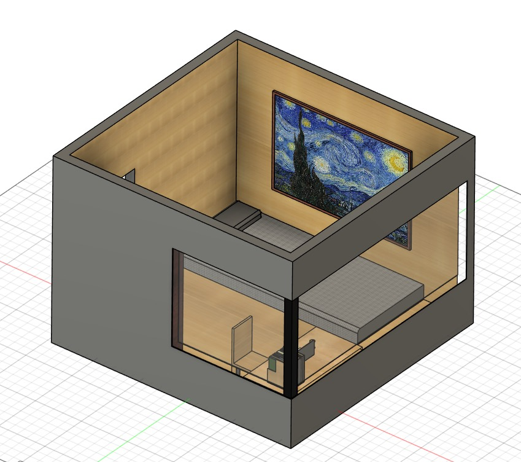
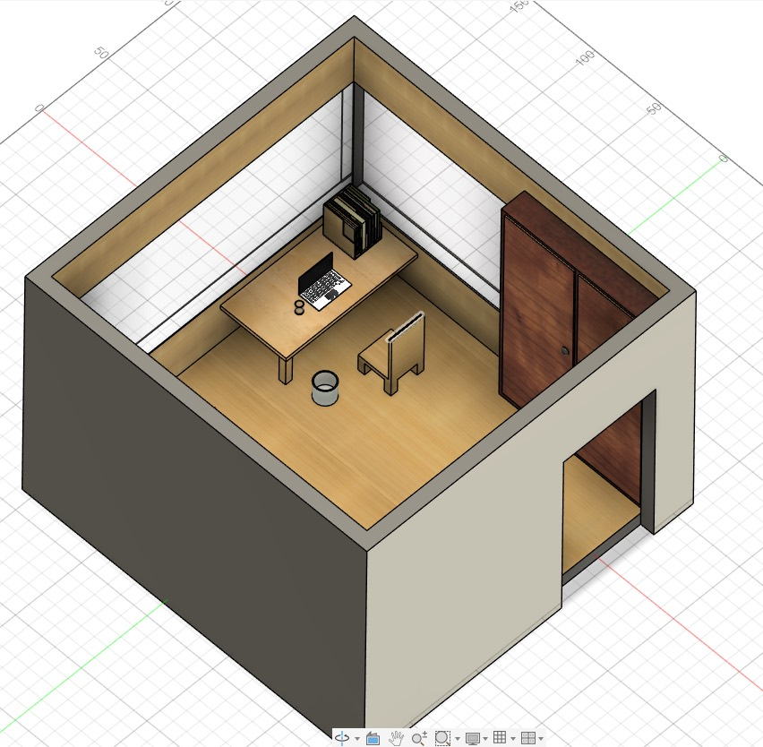
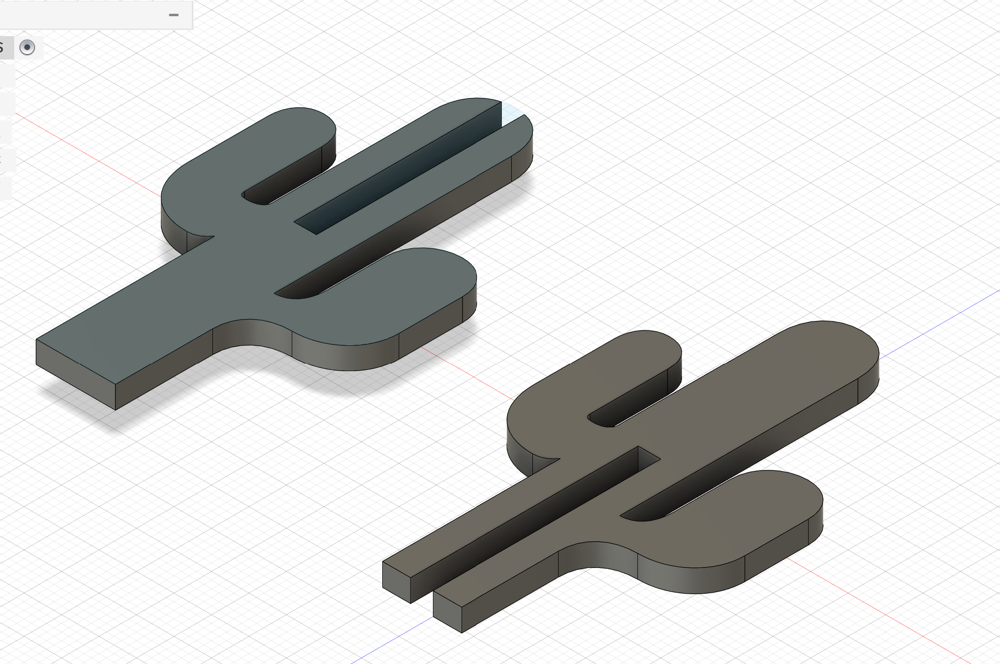
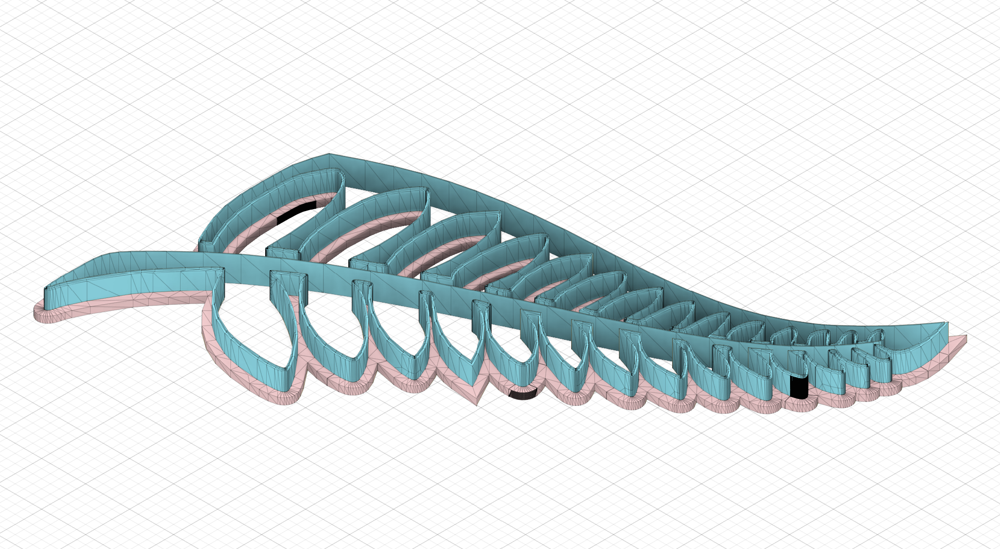

Renzo's Creative Tech Studio
A collection of edited images, Blender models, Autodesk Fusion designs, and a seed-to-sprout animation, presented as a growing digital world.
Image Editing


Blender 3D Modelling
These are 3D models I created in Blender. I focused on simple shapes, clean colours, lighting, and making each object look clear in the final render.


Autodesk Fusion 360
These Autodesk Fusion screenshots explore room interiors, mechanical forms, and organic structures through clear, detailed model views.




Seed to Sprout
This animation connects the leaf and tree models through a short growth story, moving from a small seed toward a finished plant.
Seed to Sprout Animation